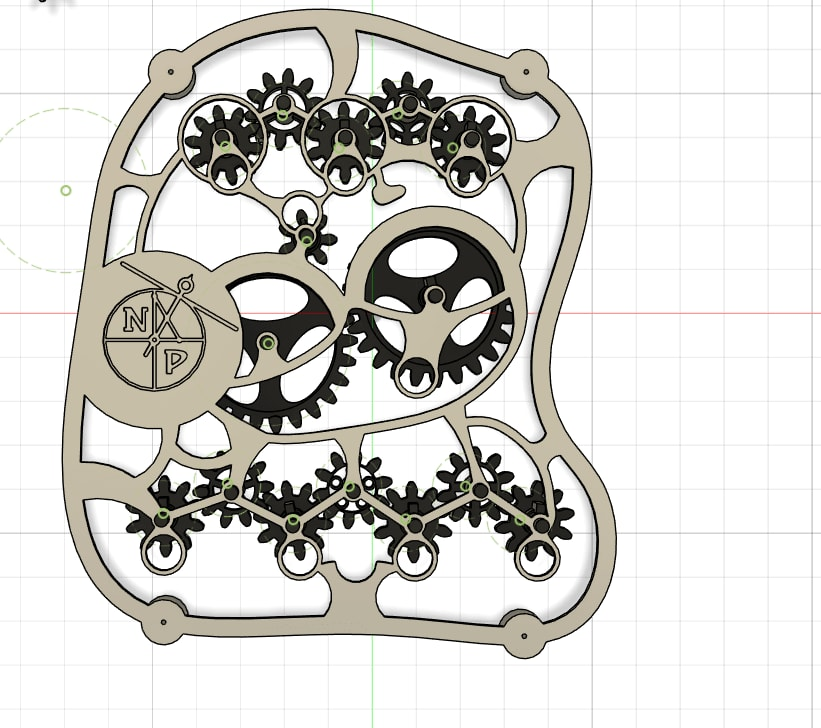
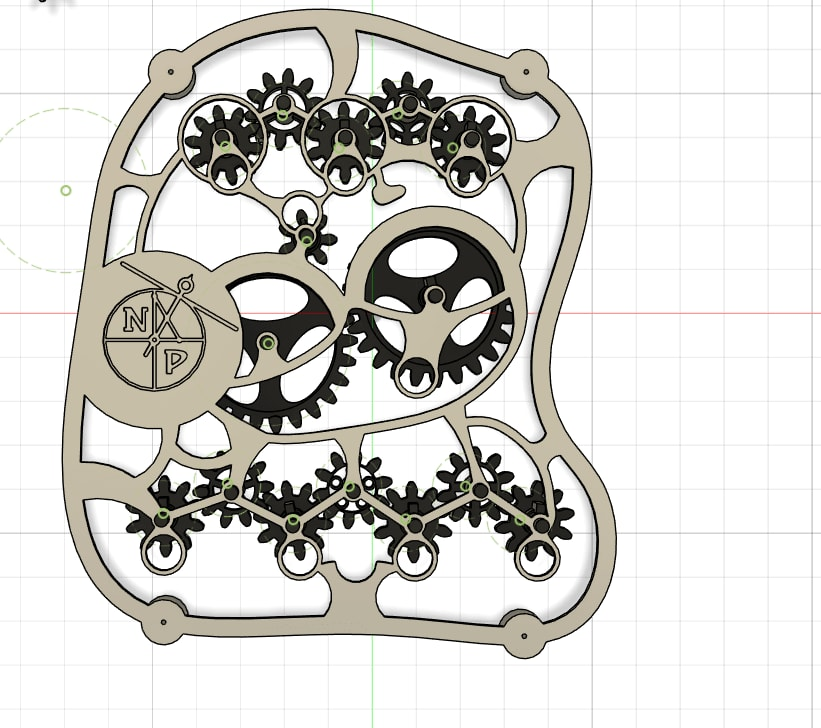

Mechanical counter
Designed a mechanical dashboard with 3 gear systems for tracking fuel, settlers, and distance.


 

For a sci-fi board game, I designed and engineered a mechanical dashboard that tracks fuel, settlers, and distance using 3 independent gear systems. Each system features custom gear ratios for modular and decimal counting (e.g. settlers in 7×25 format, distance up to 9999). üìê In the preview images, you can see: A working digital prototype modeled in CAD A real-world 3D Printed version in action One of many hand-drawn technical diagrams I used to finetune the gear placement and layer spacing The final design uses a layered structure: Bottom: hex-grid support plate Middle: gear system (custom engraved indicators) Top: engraved frame with labeled openings and player control knobs ‚öôÔ∏è Everything is functional: rotate knobs to change values, and all digits/mechanics update in sync. The design prioritizes playability, steampunk aesthetics, and manufacturing feasibility (tested with 3D print + laser cut plexi). We went trough a lot of changes, but managed to make first functional version. Need something similar? I can turn your game mechanic into a functional, interactive, physical device ready for prototyping or production.
← Back to Portfolio